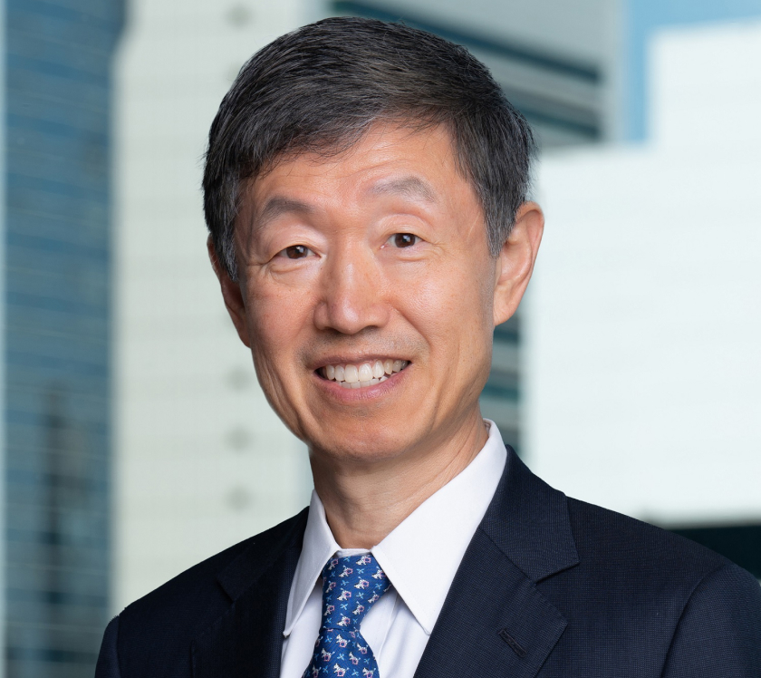

卷一 / 原书
时代改变处境，人怎样作出选择？
人生主线时代背景人物与事件
01—04 → 05—08 ←地名标记人生处境；节点位置用于表达叙事关系。背景为 AI 氛围插画
1993 年以后的事业、判断与表达
卷二 / 书外续篇
进入现实的交易，回望共同的经历
机构记录 · 当事人访谈 · 出版资料
回看 / 四条贯穿线索
WEIJIAN SHAN · A LIFE IN CONTEXT
单伟建的人生、时代与共同走过的人

机构记录 · 当事人访谈 · 出版资料